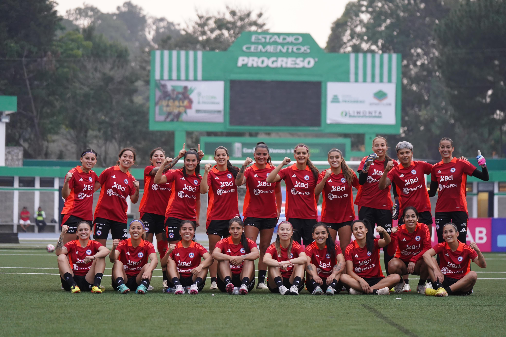

¿Quiénes somos?
En Guerreras de la Roja, somos un equipo apasionado por el fútbol femenino chileno. Nuestra misión es destacar y celebrar el talento, la dedicación y los logros de las futbolistas chilenas, tanto en el ámbito nacional como internacional.
Desde la creación de este proyecto, hemos trabajado incansablemente para proporcionar una plataforma que visibilice las historias inspiradoras de nuestras jugadoras, analice su rendimiento y explore los desafíos y triunfos que enfrentan en su camino hacia la excelencia.
Nuestra Visión: Crear un espacio donde el fútbol femenino chileno sea valorado, respetado y apoyado de manera equitativa, contribuyendo al desarrollo y crecimiento del deporte en nuestro país.
Nuestros Valores:
- Pasión: Amamos el fútbol y creemos en el poder del deporte para transformar vidas.
- Equidad: Promovemos la igualdad de oportunidades y condiciones para todas las futbolistas.
- Compromiso: Estamos dedicados a visibilizar y apoyar el fútbol femenino en todas sus formas.
- Innovación: Utilizamos herramientas y métodos innovadores para contar historias y analizar datos de manera efectiva y atractiva.
¿Cómo se compone la selección femenina?
Las Guerreras de la Roja en los Juegos Panamericanos 2023 demostraron su talento y determinación. Estas Guerreras de la Roja no solo representaron a nuestro país con orgullo, sino que también dejaron una marca imborrable en el torneo.
El corazón del equipo estuvo compuesto por:
- Jugadoras veteranas:
- Tiane Endler: Capitana y guardiana del arco, reconocida mundialmente.
- Karen Araya: Mediocampista experimentada, clave en la creación de oportunidades.
- Yanara Aedo: Delantera veloz y hábil, amenaza constante para las defensas contrarias.
- Jóvenes promesas:
- Isidora Olave: Defensa joven con una gran capacidad de anticipación y madurez en el campo.
- Sofia Hartard: Mediocampista precisa en sus pases y fundamental para conectar la defensa con el ataque.
- Fernanda Pinilla: Delantera prometedora, destacada por su olfato goleador.
La diversidad de edades entre las jugadoras fue una de las fortalezas del equipo. Esta mezcla permitió combinar la sabiduría y la experiencia de las jugadoras veteranas con la energía y la frescura de las más jóvenes.
Durante el torneo, las Guerreras de la Roja enfrentaron a equipos de alto nivel, mostrando su capacidad competitiva y su constante crecimiento. Cada partido fue una prueba de su esfuerzo y dedicación, inspirando a futuras generaciones de futbolistas.
La participación de la selección femenina en los Juegos Panamericanos 2023 destacó el avance del fútbol femenino chileno. Con una mezcla perfecta de experiencia y juventud, estas jugadoras continúan elevando el nivel del deporte y dejando una huella duradera en la historia del fútbol.
Jugadoras que han participado en amistosos
En esta sección, revelamos los detalles más fascinantes sobre las apariciones de nuestras Guerreras de la Roja en los partidos amistosos. Estos encuentros son esenciales para probar tácticas, evaluar el rendimiento y preparar al equipo para los desafíos internacionales.
- Destacadas en el Campo:
- Tiane Endler: Capitana y líder indiscutible, presencia constante en el arco.
- Karen Araya: Experiencia y visión de juego, fundamental en el mediocampo.
- Yanara Aedo: Velocidad y destreza, amenaza en el ataque.
- Promesas Emergentes:
- Isidora Olave: Defensa joven con gran capacidad de anticipación.
- Sofia Hartard: Mediocampista precisa y conectiva.
- Fernanda Pinilla: Delantera prometedora con olfato goleador.
La Paradoja de las Goleadoras: A pesar de su impresionante rendimiento en campeonatos nacionales, jugadoras como Verónica Riquelme y Nathalie Quezada han tenido menos participaciones en los amistosos. Esta sección analiza las posibles razones detrás de estas decisiones y cómo el cuerpo técnico equilibra la experiencia y la juventud en el equipo.
Verónica Riquelme
Verónica Riquelme es una de las delanteras más prolíficas del fútbol chileno, destacándose en los campeonatos nacionales con una impresionante cantidad de goles. Sin embargo, a pesar de su evidente talento y capacidad goleadora, Riquelme no ha sido convocada para los partidos amistosos de la selección nacional, lo que plantea una pregunta importante: ¿Por qué una jugadora tan destacada no tiene apariciones en estos encuentros preparatorios?
- Carrera: Verónica Riquelme ha construido una carrera impresionante en el fútbol femenino chileno. Su habilidad para encontrar el fondo de la red y su consistencia en el campo la han convertido en una figura esencial para su club. En la última temporada, Riquelme anotó 89 goles, consolidándose como una de las máximas goleadoras del campeonato chileno.
- Ausencia en Amistosos: A pesar de su éxito a nivel de clubes, Riquelme no figura en las convocatorias para los partidos amistosos de la selección nacional. Posibles razones incluyen:
- Estrategia del Cuerpo Técnico: Es posible que el cuerpo técnico prefiera evaluar a otras jugadoras en los amistosos, reservando a Riquelme para los partidos oficiales. Esta estrategia puede estar basada en la necesidad de probar diferentes combinaciones de jugadoras y no sobrecargar a las titulares.
- Compatibilidad con el Sistema de Juego: Otra posible explicación es que, aunque Riquelme sea una excelente goleadora a nivel de clubes, su estilo de juego puede no encajar perfectamente con el sistema táctico que el entrenador de la selección busca implementar. Los amistosos podrían ser utilizados para encontrar jugadoras que se adapten mejor a esta táctica específica.
- Factores Externos: También hay factores externos que podrían influir en su ausencia, como lesiones, compromisos personales o decisiones administrativas dentro de la federación.
Impacto en la Selección: La falta de apariciones de Riquelme en los amistosos puede tener un impacto significativo en la dinámica del equipo. Su experiencia y habilidad podrían aportar mucho en estos encuentros, ofreciendo oportunidades para ajustar tácticas y fortalecer la cohesión del equipo. Además, su ausencia podría estar privando a la selección de una de sus armas ofensivas más efectivas.
La historia de Verónica Riquelme subraya una paradoja en la gestión del talento dentro de la selección femenina chilena. Aunque su capacidad goleadora está comprobada, su falta de participación en los amistosos plantea preguntas sobre las estrategias de selección y preparación del equipo. Esta situación invita a reflexionar sobre cómo se toman las decisiones de convocatoria y la importancia de aprovechar al máximo el talento disponible para enfrentar desafíos futuros.